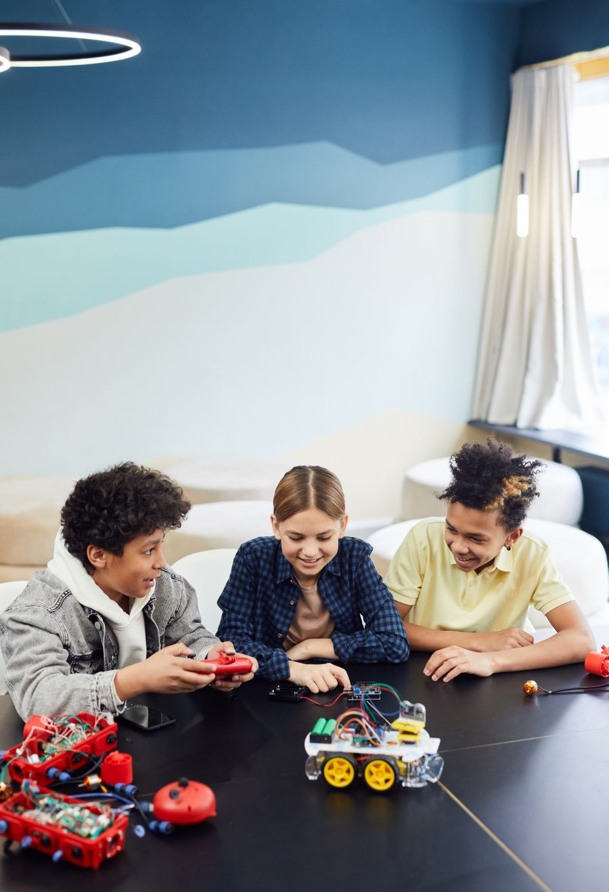
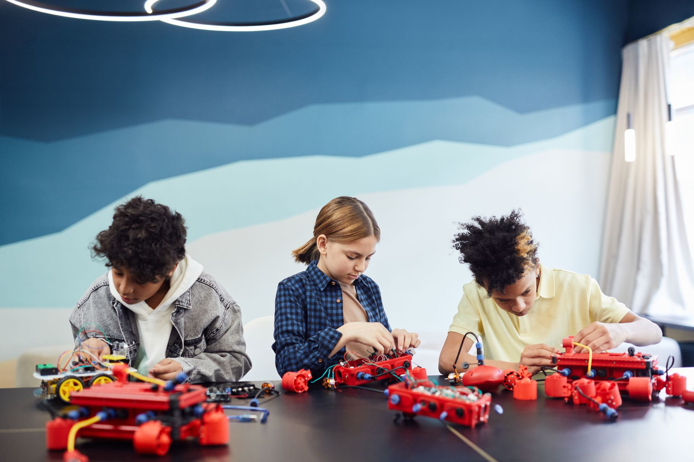
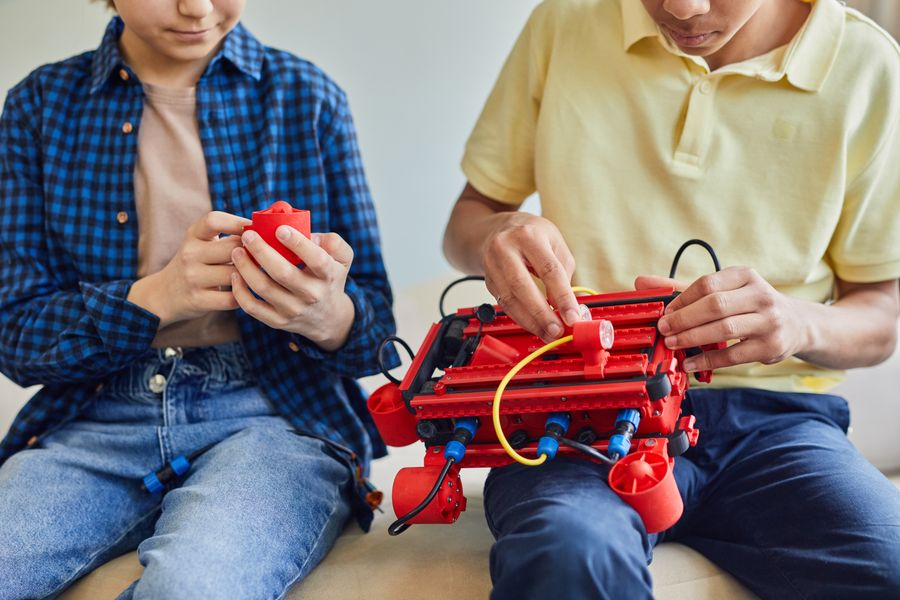
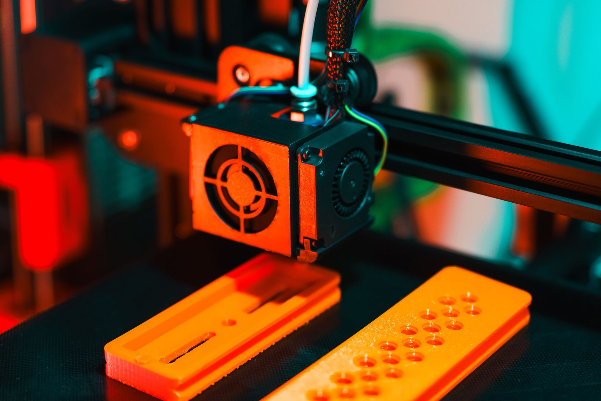

1201Camp겨울 로봇 캠프 · 5일 · 오전 10:00–12:30 · 초5–중1 · 부품은 교실에서 ·
닷새 동안 선을 따라가는 자동차 한 대를 끝까지 만듭니다.

Scratch 초3–4 Python 중등 Robot 아두이노 3D printing 방학 특강 체험 수업 무료Five steps, one grid notebook. 모든 과정은 모눈 공책 한 권에서 시작합니다 — 코드를 치기 전에 순서도를 먼저 그립니다.

1201Camp닷새 동안 선을 따라가는 자동차 한 대를 끝까지 만듭니다.
 1912Open class
1912Open class파이썬 반이 한 학기 만든 프로그램을 3분씩 보여 줍니다.

0512Clinic선이 빠지거나 바퀴가 안 도는 작품을 같이 고칩니다.
컴퓨터 없이 모눈 공책에 순서도 그리기
블록으로 게임 · 애니메이션
LED · 센서 · 모터를 코드로
문제 풀이 · 데이터 다루기
우리 반 시간표 앱 만들기
3D printers, soldering desk, 16 laptops. 수업이 없는 평일 오후에는 수강생이 작품을 마저 만들 수 있게 열어 둡니다.

장비 전체 보기